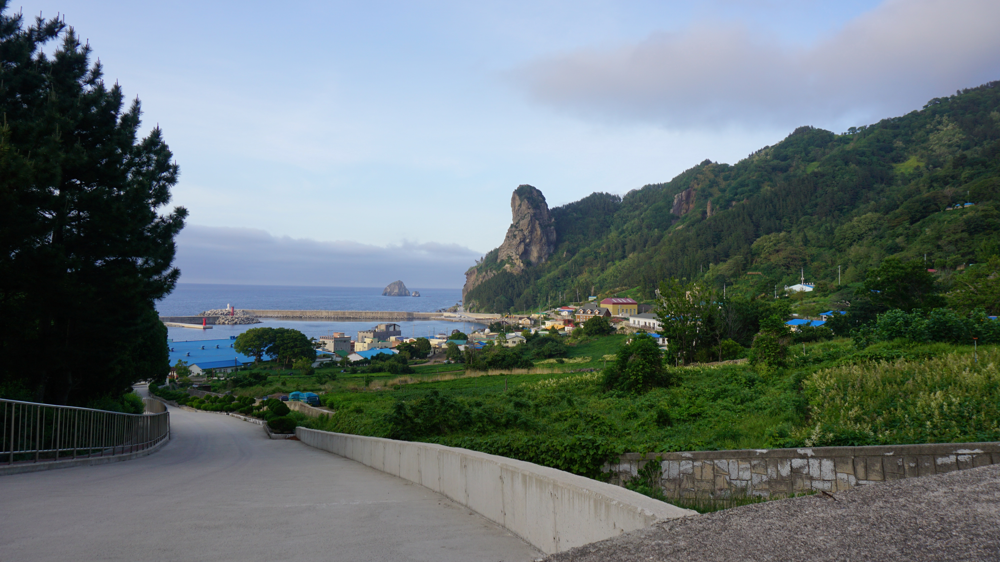
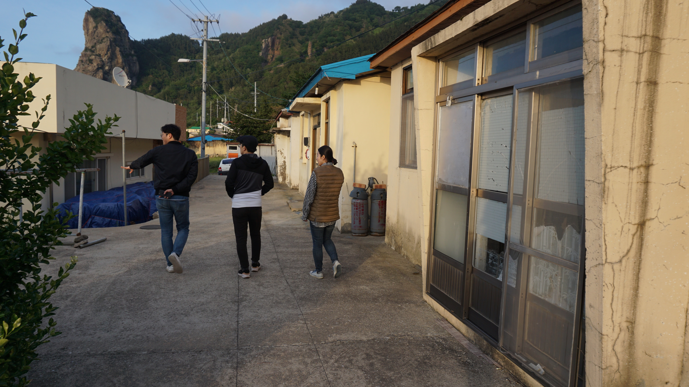

Project / Advisory
울릉도 리서치 및 프로젝트 대상지 선정 자문
Advisory on Ulleungdo Research and Project Site Selection

울릉도를 거점으로 청년 유입과 지역 재생 가능성을 탐색하며, 한달살이 기반의 마을살이 프로그램을 위한 후보지와 생활 인프라를 검토한 현장 중심 리서치 프로젝트다.
This field-based research project explored how Ulleungdo could attract young residents and support local regeneration, while assessing candidate sites and infrastructure for a month-long village living program.
프로젝트 개요
본 프로젝트는 울릉도를 거점으로 한 청년 유입과 지역 재생 가능성을 탐색하기 위해 기획된 현장 중심의 임팩트 리서치다. 궁극적으로는 울릉도 한달살이 형태의 청년 마을살이 프로그램을 설계하기 위한 기초 조사로서, 지역의 생활 환경과 유휴 공간 자원, 장기 체류 프로그램 운영 가능성을 종합적으로 살펴보는 데 목적이 있었다.
리서치는 2018년 5월, 2박 3일 동안 울릉도 현지에서 진행되었다. 단순한 관광지 답사를 넘어서 태하, 현포, 나리분지와 저동, 도동 등 주요 마을과 항구 거점의 생활 환경을 관찰하고, 폐교, 빈집, 공공시설처럼 코워킹 및 코리빙 공간으로 전환 가능한 유휴 자원을 집중적으로 점검했다.
참여 인원은 리서치 진행팀 2인, 외부 초청 전문가 2인, 현지 코디네이터로 구성되었으며, 본인은 초청 전문가의 한 사람으로 참여했다. 리서치의 핵심 목표는 마을 생활 환경 심층 조사, 신규 청년 유입 및 거점 활동 활성화 방안 도출, 그리고 한달살이 운영에 필요한 기반시설 파악이었다.
이 프로젝트는 울릉도의 자연 환경과 문화 자원을 청년 문화 및 체류 프로그램과 어떻게 연결할 수 있을지 검토한 사례로, 섬 지역 고유의 조건을 바탕으로 지속 가능한 지역 재생 모델의 가능성을 탐색한 리서치였다.
This project was a field-based impact research initiative designed to explore the potential for attracting young people and regenerating local communities in Ulleungdo. It functioned as a foundational study for a one-month village living program for youth, examining everyday living conditions, underused spatial assets, and the feasibility of longer-term stays on the island.
The research was conducted over two nights and three days in May 2018. Rather than focusing on sightseeing, it closely examined village environments in Taeha, Hyeonpo, Nari Basin, Jeodong, and Dodong, while inspecting idle assets such as closed schools, vacant houses, and public facilities that could potentially be repurposed as co-working or co-living spaces.
The team consisted of two project researchers, two invited specialists, and a local coordinator, and the author participated as one of the invited experts. The core objectives were to conduct a deep survey of village life, identify strategies for attracting young residents and activating local hubs, and assess the infrastructure needed to support a one-month living program.
In that sense, the project explored how Ulleungdo's natural and cultural resources could be connected to contemporary youth culture and residency programs, testing the possibilities of a sustainable regeneration model grounded in the island's specific local conditions.

State. 완료 Completed
Role. 답사 Field Research
Note. brunch.co.kr/magazine/ulleungresearch
Partner. 로모 Romor, 한동대학교 산학협력단 Handong Industrial-Academic Cooperation Foundation
Client. 울릉군청 Ulleung-gun Office